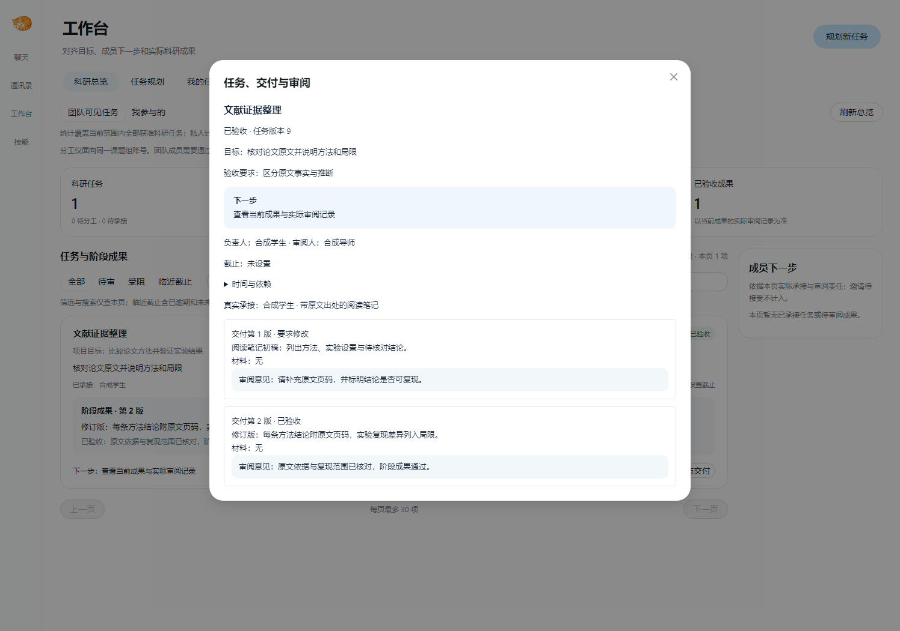

小林，下周组会你讲一下项目进展，十分钟就好。重点讲换了实验条件后，结果有什么不同。周五先发我一版。
这份汇报，是怎么改出来的？
-
接下群里的安排
老师把群里的安排建成任务。小林接下邀请，确认周五交初稿，汇报时比较两轮实验。
-
用实验记录准备初稿
小林从任务进入工作台，选好两轮实验的记录，请个人助理参考资料梳理十分钟的提纲，再把初稿交到任务里。
-
按意见改好再交
老师看过初稿，留下意见：“把两轮实验放在同一张图里，标清样本量。”小林把修订版交回同一项任务，两版文件和意见都能回看。
